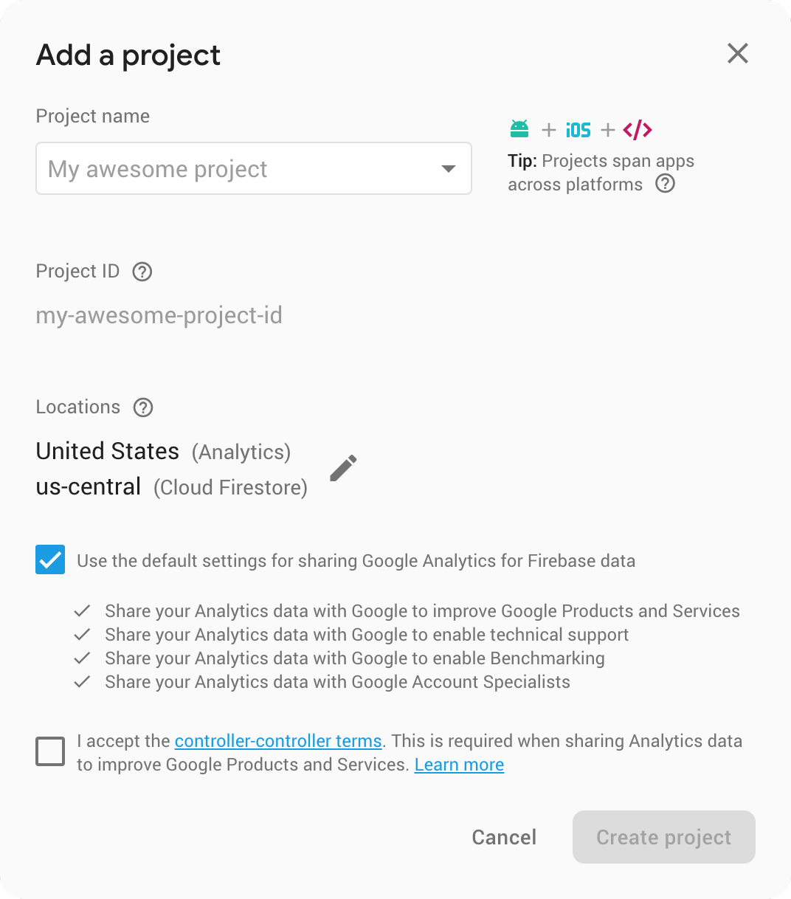
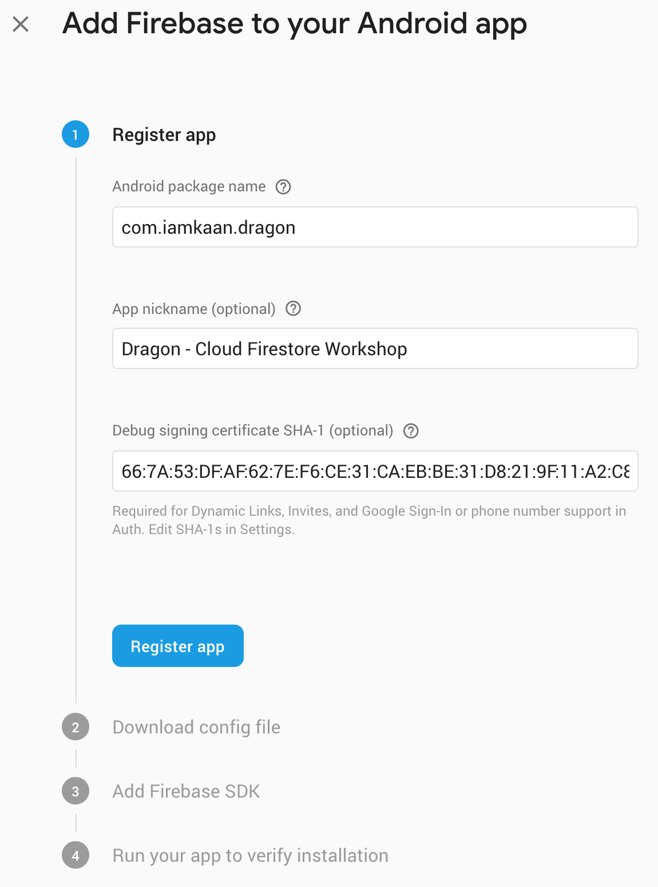
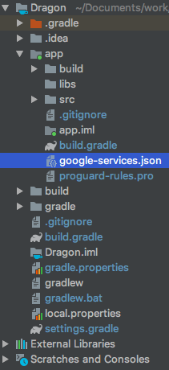
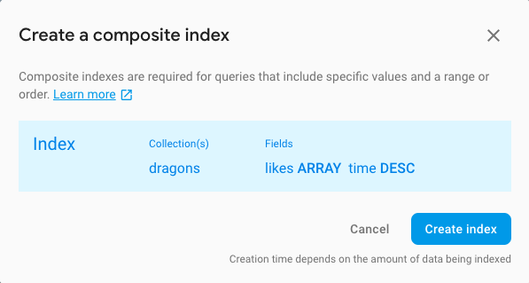

In this workshop we're going to create an Android app for bragging where Dragon owners can show off their magical fire-breathing creatures. We're going to use Cloud Firestore and learn how to
Before you start, make sure you:
First of all, go to Firebase Console at https://console.firebase.google.com and create a new Project.?

Create an Android app on the Firebase Console.
com.iamkaan.dragon for the package name.keytool -list -v -keystore ~/.android/debug.keystore -alias androiddebugkey -storepass android -keypass android
// for Windows
keytool -list -v -keystore "%USERPROFILE%\.android\debug.keystore" -alias androiddebugkey -storepass android -keypass android
Check these StackOverflow threads if you have issues getting the SHA-1

Then, on the next page, download the google-services.json. We're going to use it later.
Go to the Database page and enable Cloud Firestore with the test mode security option.
Go to the Storage page and enable Cloud Storage with the test mode security option.
Go to the Authentication page, switch to the Sign-in method tab and enable Google sign-in and save.
We're going to start with a project that is partially set up so that we can focus on adding new features using Cloud Firestore and don't spend time on the usual Android development.
Clone the project from https://github.com/iamkaan/dragon
git clone https://github.com/iamkaan/dragon.git
Open the project in Android Studio and run it.
Before you sign in, there's one thing to do. We need to replace the Google Sign-In request ID token. First, go to Google Developer Console's credentials page and copy the value for Web client (auto created by Google Service). Now open the UserManager class in the project and replace the value of token with the value you copied from the console.
const val token = "your token"
With this, you should be able to sign into app. Next, let's add the google-services.json into the project. Copy the file you downloaded earlier and replace it with the one that is under the app directory.

In order to have something to display initially, we've added some mock data to our database when we first launched the app. This is a social app after all, where's the fun if you're the only user 🤷
Now, we better delete the method call that adds the mock data from our RooterActivity's onCreate method.
override fun onCreate(savedInstanceState: Bundle?) {
...
addMockData()
}
Speaking of the mock data, go and have a look at your database on Firebase Console at https://console.firebase.google.com/project/_/database/firestore. Lot's of posts 😍
Now that we have something to display, let's do it! Open the DataManager class in the project. There are a few methods and lot's of TODO's here.
Before we start modifying let's go ahead and sign into the app. Open the app and sign in using your Google account if you haven't already. What happens?
That's because we implement the method that fetches the list of dragon posts. Before starting to implement the methods, there's a TODO outside all methods.
//TODO("Create the Firestore variable")
This is where we need to create a variable and assign Firestore instance to it
private val firestore = FirebaseFirestore.getInstance()
Now, we have a Firestore object that we can use. Next, let's implement the getDragons method in the DataManager class. Currently, the method should look like this:
fun getDragons(onComplete: (QuerySnapshot) -> Unit) {
//TODO("Implement the getDragons method")
}
We're going to replace the TODO line so that the method will look like the following:
fun getDragons(onComplete: (QuerySnapshot) -> Unit) {
firestore.collection("dragons")
.addSnapshotListener { querySnapshot, exception ->
if (exception != null) {
logger.e("Could not get the list of dragons", exception)
} else {
val viewModels = dataMapper.mapData(querySnapshot!!, ::updateLikes, ::deleteDragon)
onComplete(viewModels)
}
}
}
Run and see if the awesome list of amazing dragons is displayed properly 🤞
Mock data is good and handy but we'd love some real content in our app. Currently, if you try to post something, the app will crash. In order to allow our users to post their lovely dragon photos, we need to replace another TODO with an actual block of code.
fun postDragon(dataModel: DragonDataModel, onComplete: (success: Boolean) -> Unit) {
//TODO("Implement the postDragon method")
}
👇
fun postDragon(dataModel: DragonDataModel, onComplete: (success: Boolean) -> Unit) {
firestore.collection("dragons")
.add(dataModel)
.addOnCompleteListener {
if (it.isSuccessful) {
onComplete(true)
} else {
logger.e("Could not post the new dragon", it.exception)
onComplete(false)
}
}
}
Now, we can post our own content to the app! Go ahead and post one.
If you have no idea what to post, here is a photo of Smaug
Did you notice a bin icon on the dragon item you've posted? We want users to be able to delete their own posts. For that, we have another TODO block of course 🤷 Let's replace:
private fun deleteDragon(dragonId: String, onComplete: (success: Boolean) -> Unit) {
//TODO("Implement the deleteDragon method")
}
With:
private fun deleteDragon(dragonId: String, onComplete: (success: Boolean) -> Unit) {
firestore.collection("dragons")
.document(dragonId)
.delete()
.addOnCompleteListener {
if (it.isSuccessful) {
onComplete(true)
} else {
logger.e("Could not delete the dragon", it.exception)
onComplete(false)
}
}
}
Wait! When we post something, it goes to the bottom of the list. That's not quite right, is it? 🤔 We better sort the data. All we need is to to add a query line to our getDragons method.
fun getDragons(onComplete: (QuerySnapshot) -> Unit) {
firestore.collection("dragons")
.orderBy("time", Query.Direction.DESCENDING)
.addSnapshotListener { ... }
}
We can run and see the result. Much better 👍 We're now sorting the posts by the time they were posted.
Let's now add a new menu item to filter and show only the items with more than 10 likes and liked by us. Replace:
fun getFilteredDragons(onComplete: (List<DragonViewModel>) -> Unit) {
//TODO("Implement the getFilteredDragons method")
}
With:
fun getFilteredDragons(onComplete: (List<DragonViewModel>) -> Unit) {
firestore.collection("dragons")
.whereGreaterThanOrEqualTo("likeCount", 10)
.whereArrayContains("likes", userManager.getUserId()!!)
.orderBy("time", Query.Direction.DESCENDING)
.addSnapshotListener { querySnapshot, exception ->
if (exception != null) {
logger.e("Could not get the list of dragons", exception)
} else {
val viewModels = dataMapper.mapData(querySnapshot!!, ::updateLikes, ::deleteDragon)
onComplete(viewModels)
}
}
}
Now let's run and click on the filter menu item. What happened? A crash?
java.lang.IllegalArgumentException: Invalid query. You have an inequality where filter (whereLessThan(), whereGreaterThan(), etc.) on field 'likeCount' and so you must also have 'likeCount' as your first orderBy() field, but your first orderBy() is currently on field 'time' instead.
Yes, this means there are currently limitations on the combinations of the queries you can make using Cloud Firestore. For the sake of this workshop, let's filter the items that are posted within last 10 minutes and liked by us:
fun getFilteredDragons(onComplete: (List<DragonViewModel>) -> Unit) {
firestore.collection("dragons")
.whereGreaterThanOrEqualTo("time", tenMinAgo())
.whereArrayContains("likes", userManager.getUserId()!!)
.orderBy("time", Query.Direction.DESCENDING)
.addSnapshotListener { querySnapshot, exception ->
if (exception != null) {
logger.e("Could not get the list of dragons", exception)
} else {
val viewModels = dataMapper.mapData(querySnapshot!!, ::updateLikes, ::deleteDragon)
onComplete(viewModels)
}
}
}
Great, let's try again! What happens when you click on the filter menu item? Nothing really. Let's check logcat:
com.google.firebase.firestore.FirebaseFirestoreException: FAILED_PRECONDITION: The query requires an index. You can create it here: https://console.firebase.google.com/project/stack-overflow-72ad6/database/firestore/indexes?create_index=EgdkcmFnb25zGgkKBWxpa2VzEAQaCAoEdGltZRADGgwKCF9fbmFtZV9fEAM
Firebase Cloud Firestore requires you to create indices for every query combination you want to run. This is because Firestore is built to run fast and queries are usually slow. In order to make them fast, the Firebase team came up with such trick. The good news is that it's super easy to create indices, once you have the log above. All you need to do is to click on the link! 🎉

When the index creation is completed (which always seem to take quite some time), we can try and see filters working.
This is all good, but what is a social app without all the likes. We didn't yet add the like feature to our app, so the filter in previous step returned an empty list. Let's go ahead and replace the TODO with the actual code.
private fun updateLikes(dragonId: String, liked: Boolean, onComplete: (success: Boolean) -> Unit) {
//TODO("Implement the updateLikes method")
}
👇
private fun updateLikes(dragonId: String, liked: Boolean, onComplete: (success: Boolean) -> Unit) {
firestore.runTransaction { transaction ->
val reference = firestore.collection("dragons").document(dragonId)
val snapshot = transaction.get(reference)
val likes = snapshot.get("likes") as ArrayList<String>
if (liked) {
likes.add(userManager.getUserId()!!)
} else {
likes.remove(userManager.getUserId()!!)
}
transaction.update(reference, "likes", likes)
transaction.update(reference, "likeCount", likes.size)
}.addOnCompleteListener {
if (it.isSuccessful) {
onComplete(true)
} else {
logger.e("Could not update the likes for the dragon", it.exception)
onComplete(false)
}
}
}
We're using transactions to avoid race conditions. When our app has millions of users, it's likely that user will like a post at the same (or almost same) time. This might cause some likes to override the others, which is obviously something we don't want.